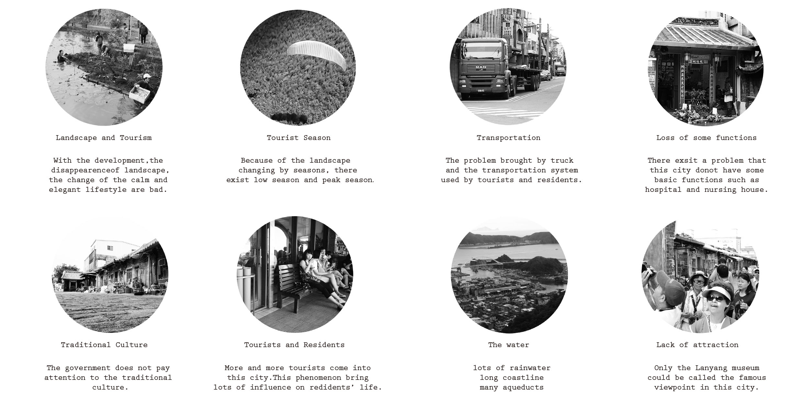

Touchen Urban Design
Group work:
Jiaao Liu; Jifan Zhan; Weizhi Huang; Jingyu Jiang; Jingyi Lu; Jingyi Zhong; Yingfang Gao; Bifang Jian; Yimin Huang;
Touchen
11.2013
This project is to study the site (which is a part of Toucheng,Yilan,Taiwan) by group and make up with the vision of city 30 years later.Meantime we should come up with some advice to help this city to develop and solve the problems which exist now. In this process we work by analyzing the layers of the city and then make sure which lifestyle of resident’s is step by step.As a basis we suppose the direction of the urban development that would help us to design our bulidings in next step.
Specific methods of operation are: ten mates are divided into five groups which have their own theme on the research about this city to help them to understand and identify problems encountered in the process of urban development. Then they should find the cause of these problems and come up with their recommendations or suggestions which finally presented in four layers -grey, blue, red, green corresponds to transportation, water,housing, plant.
The results of the analysis is 14 specific architectural projects to help the development 10 of which would be operated by us in the next step.In this project,I was responsible for the study of the transportation systems and coastline morphology at the beginning, tourism study in the mid, as well as part of works in discussions,model making and maping.
FINAL RESULTS
Model
General Plan
Projects
Time Line
GROUP ANALYSIS
Touchen Panoramic View

Developmen Issues
Basic Analysis
Season Industrial
Urban Section
Other Works